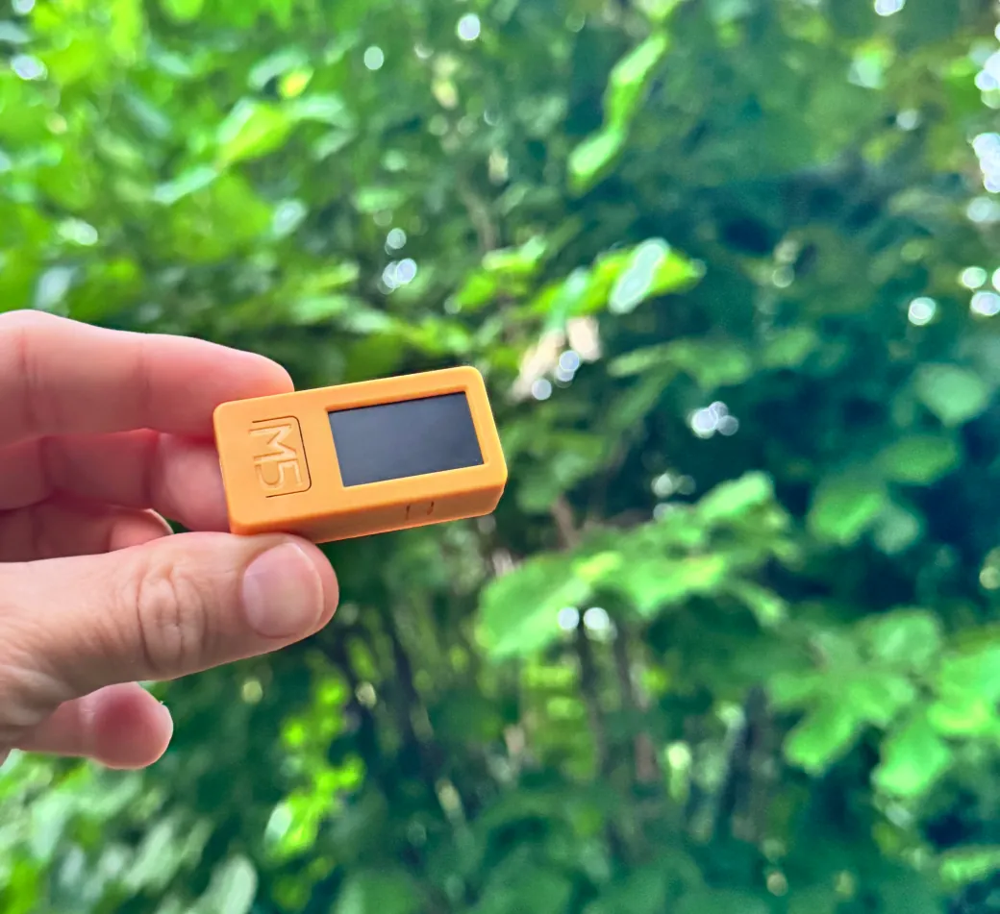
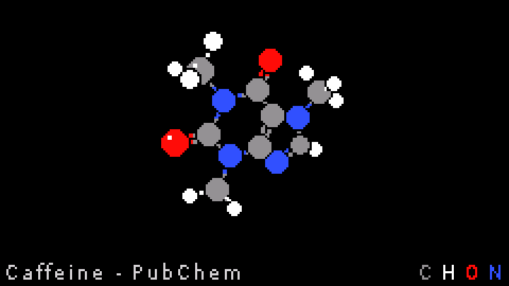
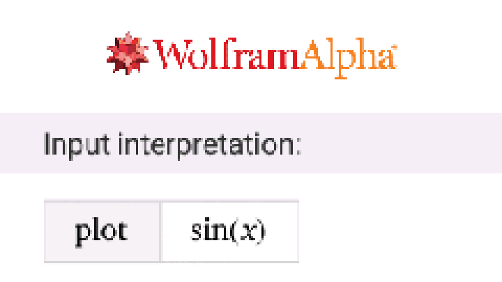
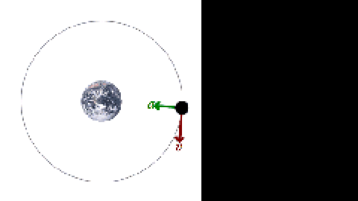
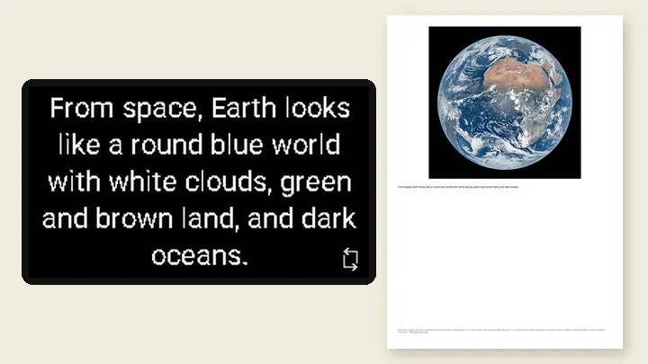

A first AI for curious minds
Ask. Look up. Carry on.
Zitro is the AI you ask and put down. One question, one answer — then it goes quiet. No feed, no account, nothing to scroll.


0 feeds·0 notifications·0 ads
it answers, then goes dark
Press
One button. It listens only while you hold the moment — never before, never after.
Ask
Any question, out loud, in your own language. Why is the sky blue? What's 12% of 340?
Look up
Read the answer — words, a graph, or a real photo. Then the screen fades, and the moment is yours again.
One quiet device,
four good reasons
A first AI that teaches judgment
Kids ask out loud, read the answer, and check where it came from. Sensitivity for what AI can and can't do — built through practice, not lectures.
Explore AI literacy For young adultsAI without a camera on your face
All the answers, none of the always-on glasses. Nothing you wear that films the room, records your friends, or reports to an account.
Compare the gadgets For screen detoxBe in the moment
One answer, then the screen goes dark. No feed to fall into, no notification pulling you back — the fact without the lost afternoon.
Read the detox story For creatorsFrom idea to paper
Generate images, steer stories, pull real photos — then print the keeper and pin it to the fridge. Answers that leave the screen entirely.
See what you can makeEveryday brilliance,
quietly delivered
Smart conversations
Ask your AI assistant anytime and get short, clear answers.
Instant answers
Quick, accurate responses without reaching for your phone or computer.
Family-friendly
A safe first step into AI for kids — learning its potential and its limits.

Molecules you can hold
Ask "How is caffeine built?" and the real molecule opens on screen. Turn the stick to look around it, with each kind of atom in its own color.
3D data from PubChem. No 3D record, as with table salt or proteins? You get a picture instead.

Math & science
Say "plot sin(x)" and Wolfram Alpha sends back the real graph. Roll the stick to zoom in, then scroll with the buttons.
Experimental.
Ultra portable
Fits in your pocket, works anywhere you go.
Current model needs a WiFi connection.

Pictures that move
When the picture for an answer is an animated GIF, it plays right on the little screen, at its own speed, even while you scroll or zoom.
Very large GIFs stay a still picture. Animation: HereToHelp, Wikimedia Commons, public domain.

Print it for the school folder
Send a found or generated picture to your printer over AirPrint/WiFi. Pick a size, or choose "Half + text" for the picture with the answer below it. A small footnote names the source.
Experimental. Works with some printers. Photo: EUMETSAT.
Camera
Snap a photo and get kid-friendly AI analysis of objects and plants.
Requires optional M5 camera module.
Wikipedia photos
Real, attributable photos from matching articles — zoom and pan included.
Sources, not guesses
For 3D models, photos and graphs, the AI only picks what to look up. What you see comes from PubChem, Wikipedia or Wolfram Alpha.
The written answer still comes from the AI.
Surprise mode
Shake it for one delightful fact. Then it stops. That's the feature.
Image creation
Generate simple visuals for inspiration, right on the little screen.
Focused experience
A distraction-free interface designed for clarity — nothing pulls you back in.
Voice settings
Change any setting by speaking naturally. "Volume to 100" or "switch to English" — in German and English.
Timers & reminders
"Remind me in 90 minutes about the laundry." Alerts appear on screen, even from sleep.
Easy setup
Connect to the "zitro" WiFi and the settings page opens on your phone. Two minutes, no app.
Bilingual & beyond
Full interface in German and English. Displays text in 30+ languages including Greek, Cyrillic, and Hebrew.
Built by Matthias
Hi, I'm Matthias, the creator of Zitro — a developer, a maker, and a father of three. Like most parents, I live the tension every day: I want to protect my kids from the overwhelming digital world, and at the same time I don't want to lock them out of it. They should grow up educated about AI — seeing its potential for creativity, knowledge, and agility, and learning its limits first-hand.
Zitro is my answer to that tension: a device that answers their questions and then hands the moment back. No feed, no account, nothing pulling them in deeper. Curiosity in, an honest answer out, and eyes back on the world.
It started as an experiment at the intersection of hardware and software — "what if your AI assistant could fit in your pocket and work anywhere?" — and turned into something my own kids reach for. I hope it brings your family as much joy and curiosity as it brings ours.
Open source
Zitro's firmware is open source and built in the open. Explore the code, contribute, or build your own.
View on GitHub ★ Loading...